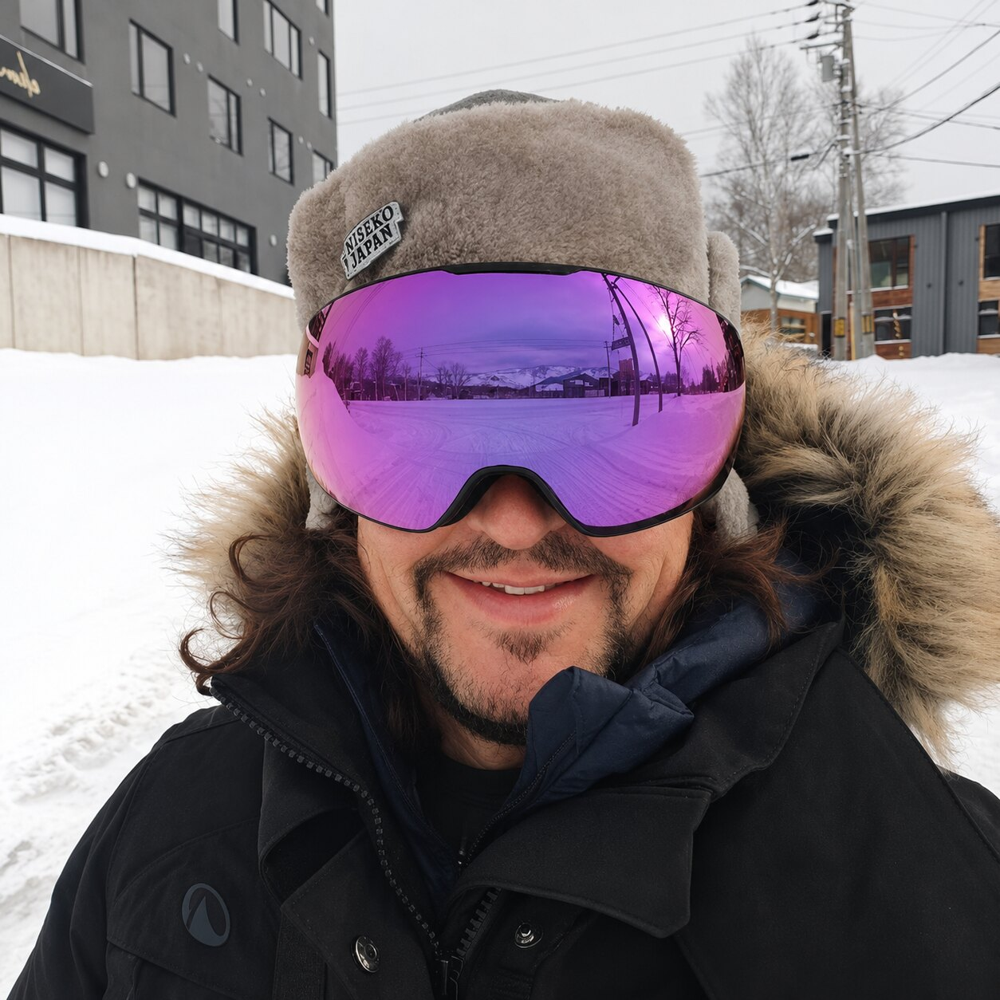
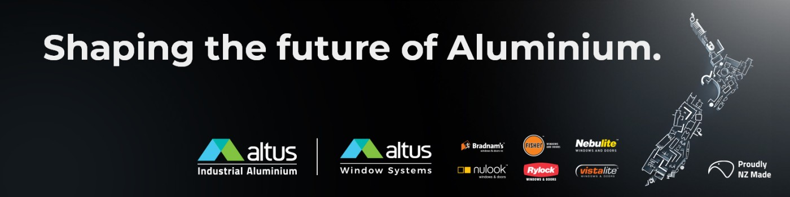
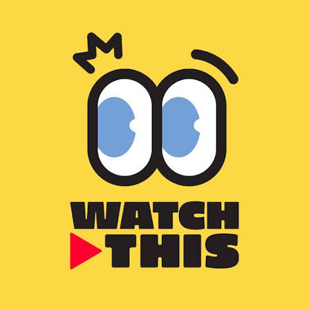
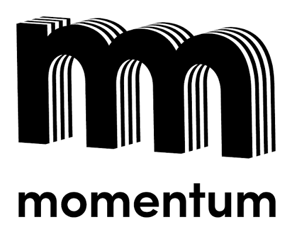

Annual Google portfolio
Helped grow an industry client portfolio from approximately US$2m to over US$40m annually.
THE COMMERCIAL EDITION / VOL. 01 / 2026
I build strategic relationships, develop new revenue opportunities and connect commercial strategy with execution. My experience spans Google, entrepreneurial media businesses and international property and content partnerships.
Partnerships · Business development · Go-to-market · Commercial leadership
CHAPTER 01 / THE NUMBERS
Selected outcomes and contributions across different stages of my career.
Helped grow an industry client portfolio from approximately US$2m to over US$40m annually.
Contributed to commercial and audience-growth strategy as the channel grew from approximately 1k subscribers.
Channel views during a period of collaborative content, distribution and growth work.
Contributed to tripling billings through business development and strategy at Momentum / Point Media.
Metrics are historical career figures, with contributions described according to role and team context.
CHAPTER 02 / THE TOOLKIT
Developing executive relationships, shaping partner propositions and bringing mutually valuable agreements to life.
Finding growth opportunities, expanding accounts and building commercially viable routes to market.
Translating business objectives into audience, channel and brand strategies.
Connecting advertising technology, YouTube, media investment and storytelling to commercial outcomes.
Owning senior relationships while coordinating specialist teams across strategy, trading and execution.
Co-founding and scaling an agency, developing operating processes and leading distributed teams.
CHAPTER 03 / THE WORK
Examples of my role in partnerships, account leadership, brand strategy and audience development.
UCHI JAPAN · 2025 - 2026
Worked alongside CEO Chris Pickering on sponsorships, partnerships and new commercial opportunities in the Niseko property market, with Mount Yotei at the heart of the destination story.

Jointly closed a package covering video production, promotion, sponsorship and developer listings, with commission linked to sales. No realised commission revenue claimed.
Co-narrated a film with Chris Pickering that appeared at the 2026 Niseko Film Festival. Collaborated with director and producer Damien Sung on scripts for I Love Niseko, planned for late 2026.
Helped connect Uchi's growing YouTube audience with wider opportunities in partnerships, monetisation and international reach.
GOOGLE · 2004 - 2018
Developed strategic relationships and joint business plans across technology, telecoms and consumer sectors. Helped expand an annual industry portfolio from approximately US$2m to US$40m+.
Enterprise growth · Executive partnerships · Digital platforms
MOMENTUM / POINT MEDIA · 2019 - 2020
Led the AA Money relationship and commercial media strategy, translating customer-acquisition objectives into an integrated agency response. Specialist colleagues handled media bookings and supplier negotiations.
Strategic account leadership · Media investment · Team coordination
MOMENTUM → SMART MEDIA · 2019 - 2023
Participated in the team pitch for Altus and contributed to developing differentiated brand personas. Strategy began at Momentum and was subsequently brought to life through TV and video work at Smart Media.
Multi-brand positioning · Collaborative pitch · Integrated media

SMART MEDIA · 2021 - 2023
Co-founded and commercially led a New Zealand media agency, developing client relationships, cross-platform partnerships and a transparent buying approach. Managed direct reports and remote specialists.
Entrepreneurship · New business · Commercial leadership
CHAPTER 04 / THE JOURNEY
Commercial partnerships, audience development and sponsorships across Japan's resort-property market.
Commercial and operational processes for a mobile-first creative agency.

New business, client strategy, commercial leadership and agency operations.
Client leadership, agency growth and integrated media strategy.

Four Google roles: Industry Head (October 2012 - October 2018); Agency Team Lead (October 2008 - October 2012); Key Account Manager, New Zealand (May 2007 - October 2008); Key Account Manager, United Kingdom (April 2004 - April 2007). Enterprise account growth and executive partnerships.
Earlier experience includes The Cloud and lastminute.com. Full history is available in the CV.
CHAPTER 05 / THE PEOPLE
“Matthew’s greatest strength is his ability to see the broader commercial picture.”
“His strategic mindset and innovative approach were vital in achieving business objectives.”
Extracts from references supplied for this portfolio. Additional professional references available on request.
CHAPTER 06 / WHAT’S NEXT
Based in Valencia, Spain. Open to remote Europe / EMEA roles and international travel, across partnerships, business development, go-to-market and commercial leadership.